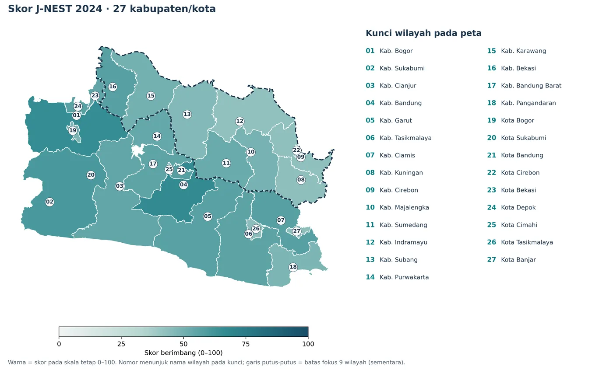
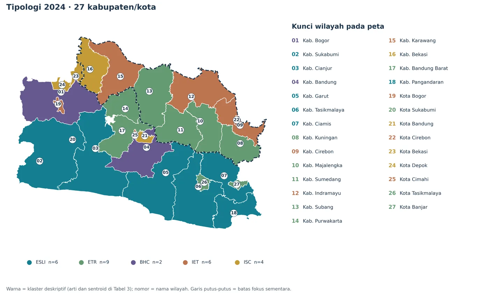

Uji kebijakan.
Buktikan nilai tambahnya.
Bandingkan telaah biasa, telaah berbasis J-NEST, dan J-NEST + orientasi SKK. Uji perubahan desain proyek, catat temuan terverifikasi, dan teruskan hasilnya kepada penanggung jawab yang tepat.
135 PANEL
Siapa bertugas, kapan diserahkan, dan apa buktinya?
Alur usulan uji J-NEST untuk DPMPTSP, Bappeda, pemilik proyek, OPD teknis, instansi lingkungan dan penelaah independen. Bukan penetapan kewenangan baru.
Dari rekomendasi ke jalur perizinan resmi
Rekam status dokumen eksternal dan tentukan tindak lanjut menurut klasifikasi risiko. Tidak ada tombol penerbit izin dalam aplikasi ini. OSS dan instansi berwenang tetap merupakan sumber status formal.
Apakah J-NEST memberi nilai tambah?
Evaluasi prospektif yang membandingkan proses biasa, profil J-NEST, dan profil + SKK. Kriteria utama: perubahan yang benar-benar ditindaklanjuti, temuan tambahan yang sah, klaim tidak terbukti dan waktu kerja.
Hitung J-NEST.
Pahami setiap angka.
Ikuti proses nyata penelitian: delapan data mentah → transformasi dan normalisasi panel → bobot CRITIC → tiga dimensi → indeks dan peringkat. Lanjutkan ke simulasi desain investasi dan laporan rekomendasi PDF.
Skor wilayah adalah konteks penelaahan, bukan prediksi dampak atau izin investasi. Tahap berikutnya menguji pilihan desain dan bukti tapak.
Dari hitungan indeks ke
rekomendasi berbasis bukti.
Simulasikan penyesuaian lokasi, teknologi, kapasitas, dan tahapan investasi. Telusuri kekuatan bukti G0–G4, lalu susun rekomendasi bersyarat yang dapat dipertanggungjawabkan.
Simulasi penggunaan J-NEST–SKK
Lima langkah penelaahan menggunakan hasil indeks yang terhitung. Hasil akhir berupa laporan PDF naratif yang merujuk metode, G0–G4 dan SKK.
Definisikan pertanyaan investasi
Mulai dari masalah yang perlu ditelaah, bukan dari target skor indeks.
Fungsi sumber daya apa yang harus dipertahankan, dan siapa penggunanya?
Siapa yang memiliki data, pengalaman penggunaan, dan kompetensi teknis?
Siapa menyiapkan klaim, memeriksa, menanggapi, dan memutuskan?
Membaca wilayah.
Menelaah investasi dengan bukti.
Kerangka J-NEST–SKK menghubungkan profil industri, sosial-ekonomi, dan vegetasi–termal dengan pemeriksaan alternatif proyek dan tanggung jawab ekologis.
Atlas Jawa Barat, 2024
Profil dan peta berdasarkan hasil penelitian; bukan peta kelayakan investasi.
Profil 27 kabupaten/kota
Kab. Subang
15 skor J-NEST tertinggi
Skor komposit tidak cukup untuk memilih proyek.
Agregasi geometrik mengubah peringkat hingga 11 posisi. Profil dimensi harus dibaca berdampingan sebelum memeriksa desain dan bukti tapak.
Eksplorasi profil J-NEST
Temukan kondisi 27 kabupaten/kota menurut tipologi 2024, skor yang terdokumentasi, dan sembilan profil dimensi pada Tabel 3.
Peta tipologi · Jawa Barat
Kab. Subang
Profil dua wilayah
Angka IDI–SEC–ESP dihitung ulang untuk seluruh 27 wilayah pada tiap tahun 2020–2024.
Profil Rebana dan pembanding · tahun terpilih
| Wilayah | Status | J-NEST | IDI | SEC | ESP | Peringkat | Tipologi |
|---|
Panel J-NEST 2020–2024 & audit hitung ulang
Seluruh 135 observasi dari tiga berkas yang diunggah telah dicocokkan berdasarkan kode BPS dan tahun. Indeks dihitung di browser menggunakan metode paper; kecocokan pada panel olahan bukan audit independen sumber primer.
Skor indeks
Delapan proksi
Perbandingan 27 wilayah dan lima tahun
| Kabupaten/Kota | Tahun | J-NEST | IDI | SEC | ESP | Peringkat/27 | NDVI | NDBI | LST °C |
|---|
Jejak audit panel & perhitungan
Batas audit: kami memeriksa kelengkapan panel, kesamaan angka pada berkas yang diunggah, dan reproduksi rumus penelitian. Pemeriksaan ini belum memverifikasi sumber primer, lokasi piksel, metodologi pengolahan citra, metode agregasi, catatan data hilang sebelum penggabungan, serta kode statistik asal penelitian. Peta atlas tetap ilustratif dan tidak dapat digunakan menguji batas hukum tapak.
Lima tipologi teritorial
Hasil k-means pada tiga skor dimensi terstandardisasi tahun 2024; kelompok deskriptif, bukan kategori perizinan atau hasil evaluasi dampak.
Karakter profil setiap tipologi
Sensitivitas indeks dan peringkat
Perubahan pilihan agregasi atau konstruk memengaruhi cara membaca profil. Nilai di bagian atas merupakan hasil penelitian yang dapat dicocokkan dengan panel olahan; pilihan bobot tetap berupa simulasi metode.
Pergeseran peringkat maksimum pada 27 kabupaten/kota.
Posisi per wilayah, ketika aturan agregasi berubah.
Spearman aritmetika–geometrik.
Hasil uji sensitivitas paper; peringkat direproduksi pada panel terunggah
| Spesifikasi | Spearman | Geser rata-rata | Geser maks. | ARI klaster |
|---|
Eksperimen bobot tiga dimensi
Menggunakan skor presisi penuh 27 wilayah yang direproduksi dari panel olahan 2020–2024. Mengubah bobot dan metode hanya menguji sensitivitas urutan wilayah, bukan kelayakan investasi.
Urutan simulasi bobot
Penapisan berbasis bukti proyek
Simulasikan dokumentasi pemeriksaan awal. Status tidak memberikan persetujuan, rekomendasi izin, atau nilai kompensasi ekologis.
Progres berarti status telah diisi, bukan bukti telah dinyatakan memadai.
Dua studi kasus, dua jenis persoalan
Penelitian membedakan dokumen Tol Akses Patimban dari profil penawaran proyek air bersih Patimban. Kedua proyek tidak diperlakukan sebagai satu kasus sebelum–sesudah.
Siksa Kandang Karesian dalam J-NEST
SKK memberi orientasi etis dan pertanyaan tata kelola. Teks historis bukan rumus indeks, ambang ekologis, prosedur perizinan, atau dasar menghitung kompensasi modern.
Apa yang dijaga?
Pengetahuan siapa?
Siapa bertanggung jawab?
Dari konteks wilayah ke keputusan berbasis bukti
IDI · SEC · ESP dan sensitivitas
Penghidupan · pengetahuan · tanggung jawab
Bukti tapak · alternatif · dampak tersisa
Tanya J-NEST
Tanyakan metode, temuan, wilayah, atau alur G0–G4. Jawaban hanya menggunakan materi paper dan menunjukkan batas kesimpulannya.
Asisten J-NEST–SKK
Mode panduan lokal · berbasis isi penelitianOPENAI_API_KEY disetel sebagai environment variable di Vercel dan fungsi /api/chat aktif, aplikasi memakai AI generatif melalui server. Jangan masukkan API key atau informasi proyek yang rahasia ke kolom chat.Metode dan cakupan data
Dokumentasi yang menjelaskan apa yang diukur, bagaimana dihitung, serta hal yang belum dapat diklaim dari penelitian.
27 × 5 = 135
Seluruh kabupaten/kota Jawa Barat, periode 2020–2024. Normalisasi minimum–maksimum dilakukan pada gabungan panel.
⅓ · ⅓ · ⅓
Bobot CRITIC dihitung di dalam setiap dimensi. Bobot utama antardimensi sengaja dibuat sama.
Proksi, bukan izin
NDVI dan LST tidak mengukur mutu air, biodiversitas, emisi, subsidensi, maupun dampak proyek tertentu.
Delapan indikator dan bobot CRITIC
Hal yang dapat dan belum dapat digunakan
Tersedia pada paper
- Panel mentah delapan indikator × 135 wilayah–tahun dari tiga CSV terunggah
- Skor dan peringkat tahunan IDI–SEC–ESP seluruh 27 wilayah yang dapat direproduksi
- Bobot CRITIC, asosiasi, dan uji sensitivitas cocok dengan paper
- Tipologi 2024, studi kasus serta alur G0–G4 dari paper
Memerlukan data/validasi lanjutan
- Autentikasi dan rekonstruksi data primer BPS, produk citra, cloud masking, agregasi, poligon
- Audit terpisah asal data dan kode produksi sumber; panel olahan bukan verifikasi primer
- Data tapak, kesesuaian tata ruang, model sektor dan kondisi sumber daya aktual
- Uji bersama pemilik proses Pemprov serta validasi penelaah independen
Visualisasi hasil penelitian

